Commit 7985cb3928fa9ecd3719d941cf4c692be181dfa1. Oba servisa javno potvrđena: game.js6.39, header6, Settings4, sadržaj odgovara lokalnom nakon CRLF/LF normalizacije. Produkcija nije korišćena za naloge/igru.
Prvi emulator privremeno pauziran, zatim vraćen u rad. Drugi vraćen na Green meni. Nema runtime izmena u ovom prolazu.
Prvi emulator pre pregleda: Mesečev Sjaj, glavni meni.
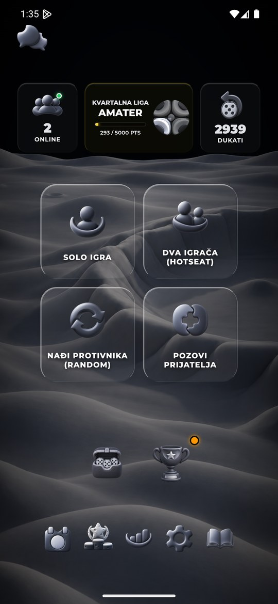
Drugi emulator pre ponovnog pokretanja: Green meni.
Posle pokretanja: samo početna zelena podloga. Ovo nije spreman meni.
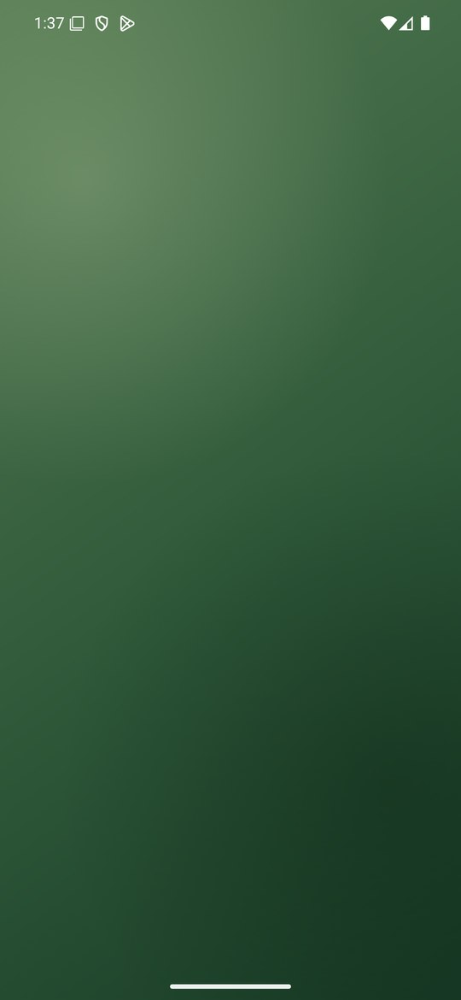
Meni se oporavio bez novog pritiska. Kadar ima nepotpuno iscrtanu donju pozadinu; nije dokaz brzog ili potpuno stabilnog prvog kadra.
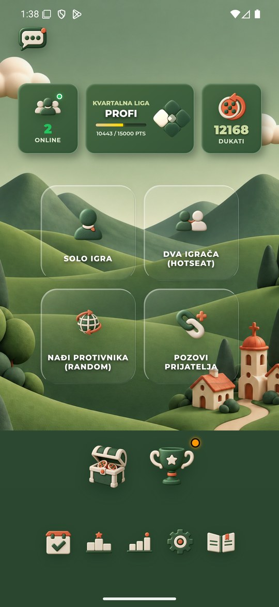
Prvi ulazak u Green Podešavanja: kompletne tematske kontrole. Raniji prvi kadar još je prikazivao meni; nije bilo ponovljenog pritiska.
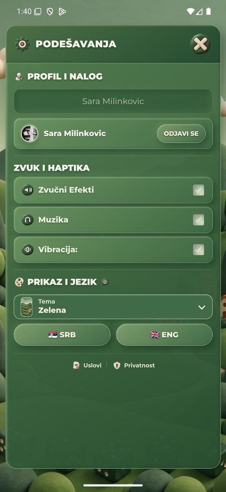
Prvi izbor Neona: vidljiv ekran pripreme, nije trenutna promena.
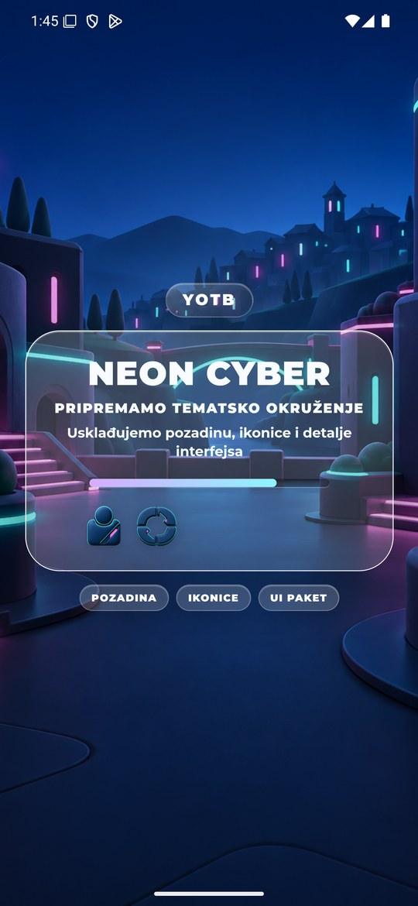
Neon Podešavanja: naziv, PNG i paleta primenjeni jednim izborom.
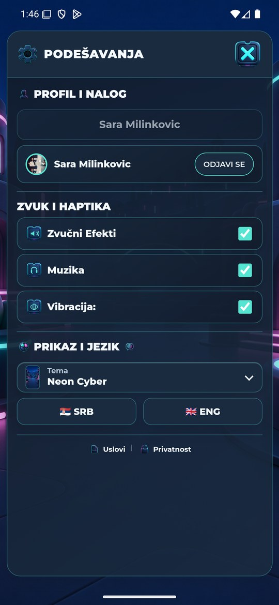
Vaskršnja Podešavanja: naziv, PNG i paleta primenjeni jednim izborom.
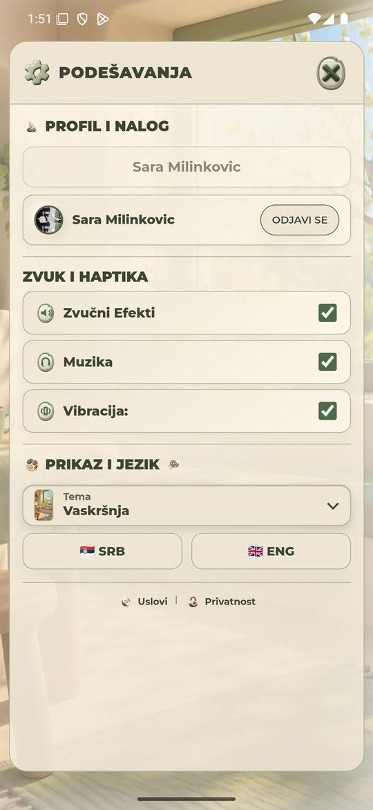
Zelena vraćena i Podešavanja zatvorena pre odobrene lokalne partije.
Odobrena prazna Hotseat partija Sara/Gost_QA: Green panel, table i skin, svi zbirovi0, bez bacanja.
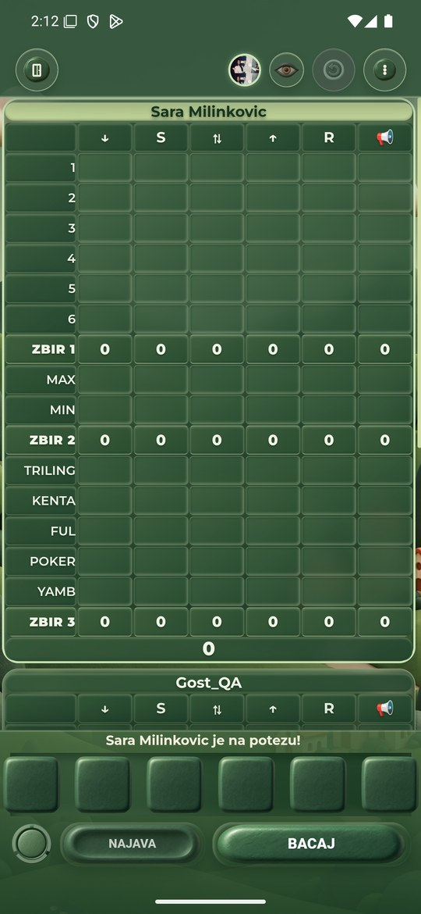
Green meni igre: tematske kontrole i aktivni skin.
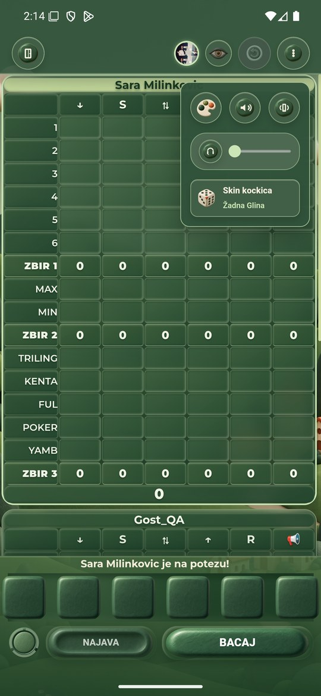
Jedan izbor u meniju igre primenio Svetlo Zlato, gornji/donji panel i odgovarajući skin. Rezultat ostao0.
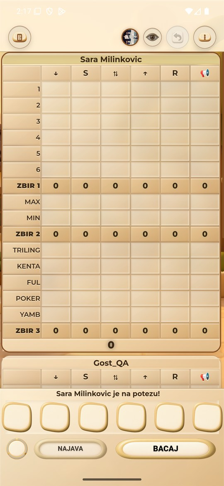
Svetlo Zlato: kompletan meni i osvežen naziv skina nakon otvaranja.
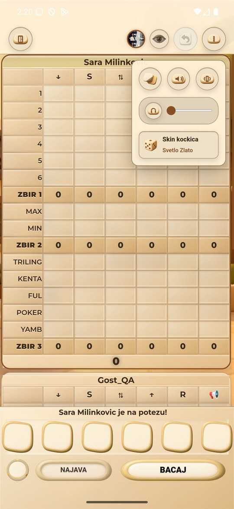
Izbor dostupnih skinova: Standard Bela, Žadna Glina i devet drugih tematskih skinova; nije dokaz kupovine.
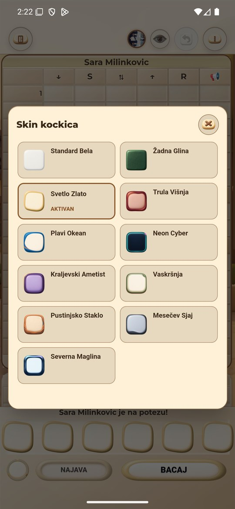
U Svetlom Zlatu izabrana Žadna Glina: kockice, BACAJ/NAJAVA i brojač koriste taj univerzalni skin, tema table ostala Light.
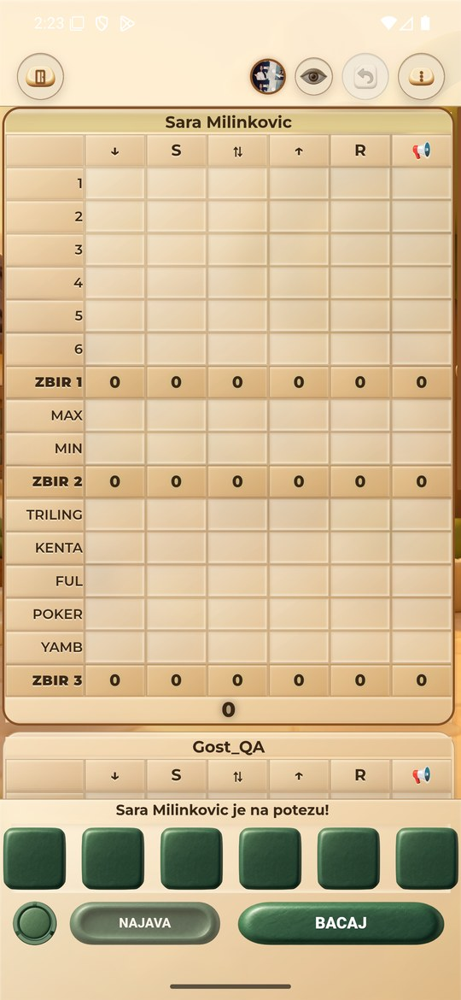
Povratak u Light glavni meni posle potvrde izlaska, bez završetka ili isplate.
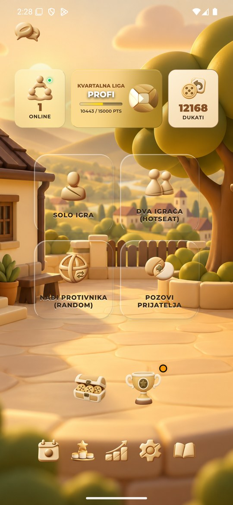
Svetlo Zlato Podešavanja: kompletne tematske PNG kontrole.
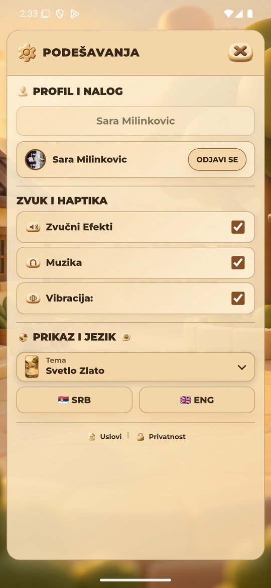
Završno stanje drugog emulatora: Zelena, glavni meni; test partija više nije na ekranu.
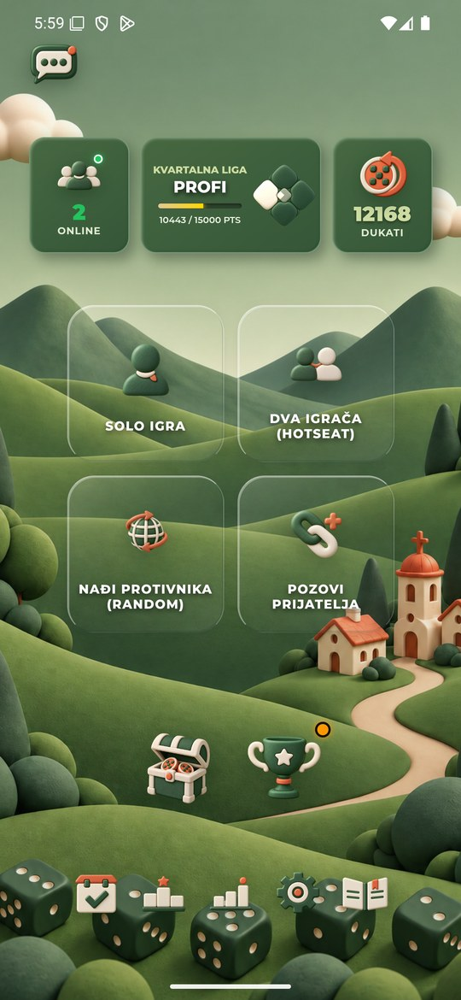